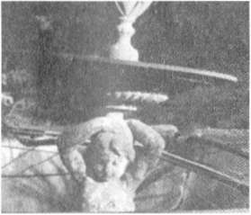
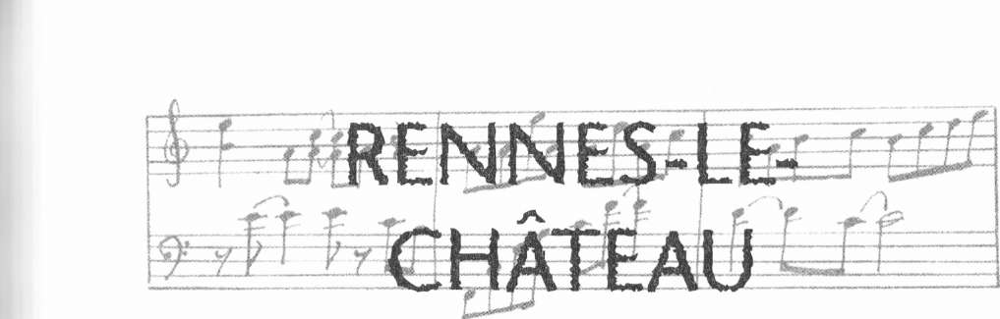

Anacaddeyi geçip ışıklara doğru yürüdü ve dağın yamacına giden dik bir yokuşa saptı... Önemli noktaları gösteren rustik ahşap tabelayı okudu: L'Homme Mort, La Cabannasse, La Source de la Madeleine ve komşu köy Rennes-le-Châteaıı'ya giden köy yolu.
Gran'Rue denilen anacaddeden güneye inerseniz Deux Rennes Yo-lu'na ulaşırsınız. Salz Nehri vadisindeki kaplıca kasabası Rennes-les-Bains ile tepedeki Rennes-le-Château köylerini birleştirdiği için bu ad verilmiştir.
1890'larda iki komşu köyün rahipleri Berenger Sauniere ile Henri Boudet hem birbirlerini ziyaret etmek, hem de Ölü Adam, Şeytan Gölü, Boynuzlu Dağ gibi kötü çağrışımlı doğal oluşumları olan kırlarda dolaşmak için sık sık bu yolu yürüyorlardı.
663

Kate Mosse
15. D o m a i n e De La C a d e
Meredith broşürde işaretlenmiş Sougraigne yolunu görüp sola saptı. Gözlerini ovuştururken araba kullanamayacak kadar yorulduğunu hissetti. Kenardaki çalılar, telgraf direkleri titriyor, salkınıyor gibiydi... Meredith frene asıldı. Yolun tam ortasında biri duruyordu. Uzun. kırmızı pelerininin kapüşonunu başına örtmüş bir kadın.
Meredith. Rennes-les-Bains'den güneye doğru çıkışta Sal/ Nehri'nden Sougraigne'e giden yolun sapağını buldu. Eğer Sougraigne üzerinden Fo-urtou'ya doğru gitmiş olsaydı. Tuz Çeşmesi adı verilen tuzun kaynağını ve 17. yüzyıl başlarında tuz vergisini denetleyen yıkık vergi dairesini ziyaret edebilirdi. Ama Meredith birkaç kilometre sonra anayoldan ayrılıp Rennes-les-Bains kasabasına yukarıdan bakan sık ağaçlıklı tepeye yükselen yola girdi. Eğer gerçekten böyle bir yol olsaydı, sizi doğruca, ağaçların arasına gizlenmiş, köy kilisesinin hüzünlü çan sesini duyan Domaine de la Cade a götürebilirdi.
16. Rennes-Les-Bains'den Rennes Le-Château'ya
"Seni arka yoldan, kırlardan Rennes-le-Château'ya götürü-
yorum. Couiza'ya gidip dolaşmaktan daha kısa sürecek," dedi Hal.
Ağaçlarla kaptı yamacı tırmanan yol kıvrımlar çiziyordu. Yeşilin, kahverenginin, kırmızının, bakırın ve altının her tonu seçilebiliyordu. Parlak sarı katırtırnakları, kestane, meşe, gümüş renkli fındık ve lııış ağaçları görünüyordu. Çam ağaçlarının altında sanki yola işaret konmuş gibi kocaman kozalaklar yatıyordu.
664
Tapınak
Arka yolları iyi bildiği için Meredith'i, Berenger Sauniere'nin köyüne götüren Hal idi. Daracık köy yolunda kaybolmak çok kolaydır. Çoğunlukla büyük çiftlik araçları tarafından kullanılır ve bazen karşıdan gelen trafiğe yol vermek için epey uzun süre geri gitmek gerekir. Hal'in seçtiği yolu kullanmak isteyenler çok dikkatli olmalı.
Rennes-les-Bains'deıı çıkınca güneye yönelen Hal ile Meredith, Sougraigne çıkışından 2.1 kilometre sonra Labadouse levhasından sağa döndüler. Harika bir vadi yolundan 1.5 kilometre gidince ağaçların arasından sıyrılıp uzaktaki etkileyici kireçtaşı yamacı gördüler. Bir kilometre sonra Coume Sourde köyüne ulaştılar. Köyü geride bırakınca toprağın rengi kahverengiden kırmızıya döndü. Şanslarına harika bir ekim günü bu yolu yaptıkları için Pirene Dağları'nın karla kaplı sivri tepelerini uzaktan görebildiler.
Rennes-les-Bains'in yakınındaki Sougraigne çıkışından yaklaşık 6.2
kilometre sonra tepenin üzerindeki Rennes-le-Château köyü gözüktü.
İnişli bir yayla yolunda 2.5 kilometre giderken yabanıl kekik, katırtırnağı aradılar ve sol taraftaki bir burun üzerinde terk edilmiş yel değirmenini gördüler. Ardından keskin bir sol dönüşle ufuk çizgisinde siluet gibi görü-
nen köye ulaştılar.
Hal yolun son dönemecini alırken, Meredith dikkatle ön camdan dışarı baktı.
Baş döndürücü yükseklikteki tepelerde evler ve başka binalar vardı. Ahşap bir tabela yolculara Rennes-le-Château ya hoş geldiniz diyordu.
Hal, P1 Belvedere otoparkının oklarını izledi ve su kulesinin yakınına park etti. Aralarında hayal ürünü Labirent mağarasının yer aldığı Pic de Soularac'ın da bulunduğu birçok dağı gösteren uzun bronz haritaya da pek uzak sayılmazdı.
665

o o
17. Güneş Saati
Otoparkın tam ortasında yuvarlak bir su kulesi vardı. Güneye bakan yüzündeki kare güneş saati yaz ve kış gündönümlerini gösteriyordu. Tepesindeki yazıyı okumak için Meredith elini gözlerine siper etti. A'ı'ci le tems s'en / Va res l'Eternitat.
Bugün "tozlu otaparkı" ziyaret ederseniz, su kulesinin duvarındaki zor anlaşılan yazıyı göremezsiniz. Boyayla üzeri kapatıldı.
18. M a g d a l a Kulesi
"Bu nedir?" diye sordu Meredith vadiye tepeden bakan mazgallı, alçak kuleyi işaret ederek.
"Magdala Kulesi. Sauniere çatı terasını, bahçesinin güneyindeki inanılmaz manzaralı taş yürüyüş yolunu ve kütüphane olarak bu kuleyi inşa ettirmiş."
"Herhalde orijinal koleksiyon burada değildir?"
"Sanmam," dedi Hal. "Babamın Domaine de la Cade'da yaptığı gibi onlar da belirli bir hava yaratmak için birkaç eski kitap yerleştirmişlerdir."
Otoparkın sağ tarafındaki Magdala Kulesi uçsuz bucaksız vadiye ba-kıyor. Eğer nereye bakacağınızı biliyorsanız, Limoux'dan güneye doğru giderken daha Couiza'ya gelmeden önce kuleyi görebilirsiniz. Kuleden bakınca yirmi iki kasaba ve köyün göründüğü söyleniyor.
666
Tapınak
19. Bethania Villası
"Sauniere şu Bethania Villası'nı, konukları için inşa ettirmiş,"
dedi Hal, önünde durdukları etkileyici binayı işaret ederek.
"Babamla ilk geldiğimizde halka açıktı ama karmakarışıktı. Bir odaya girince Sauniere'nin yatakta oturan balmumu heykeliyle karşılaşabiliyordunuz."
Olağanüstü manzaraya arkanızı dönün ve Sauniere'nin bahçesinin korkuluğu boyunca dar köy yolundan aşağıya yürüyün. Solda zarif konuk evini göreceksiniz. Carcassonne için bile etkileyici bir konut olan bina, tepenin üzerindeki bir köyde yer alınca daha da şaşırtıcı olmuyor.